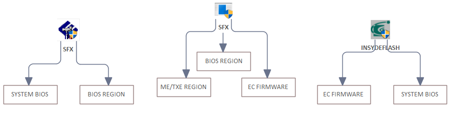
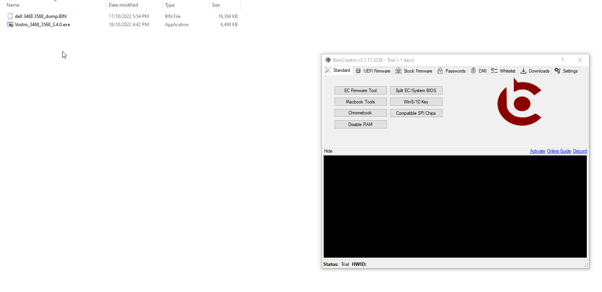
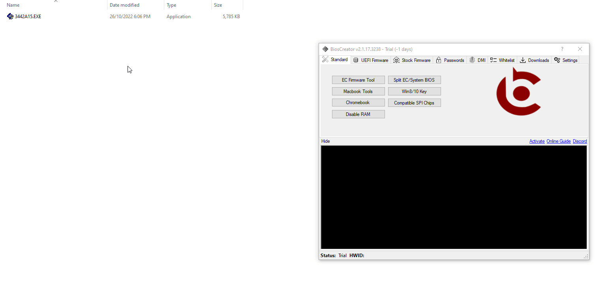
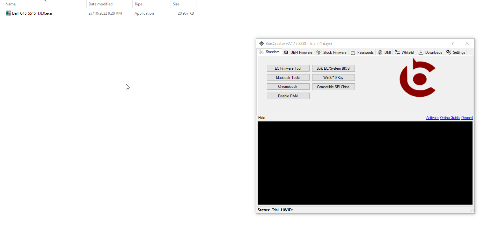

<style>
    .center {
        display: block;
        margin-left: auto;
        margin-right: auto;
        width: 50%;
      }

    a {
      text-decoration: none;
      display: inline-block;
      padding: 8px 16px;
    }
    
    a:hover {
      background-color: #ddd;
      color: black;
    }
    
    .previous {
      background-color: #f1f1f1;
      color: black;
    }
    
    .next {
      background-color: #160042;
      color: white;
    }
    </style>

<section class="support section bg-gray">
	<div class="container">
    <div class="container" style="text-align:justify; margin-bottom:50px;">
      <h4 class="join">Dell</h4>
      <p>BiosCreator implements three methods for extracting Dell stock firmware from Bios Update Utility from Dell website.</p>
            <li>Version 1</li>
            <li>Version 2</li>
            <li>Standard EXE</li>
            <li>InsydeH20</li>
            <br>
        <p>Normally, you would want to clean the ME region first. If this fails, then use the methods demonstrated in this section to create stock firmware, a flowchart is shown below as a guide for extracting firmware for Dell.</p>
        
<br>
        <h2>Requirements</h2>
            <li>Old firmware dump that is compatible with the laptop or Backup</li>

        <h2>Version 2</h2>
        <ol>
            <li>Extract bios and ME/TXE region</li>
            <li>Replace ME/TXE Region or BIOS Region using Repair Bios Region function.</li>
        </ol>
        <p>This process is demonstrated below.</p>
        

        <h2>Version 1</h2>
        <p>Creating stock firmware for Dell bios update that uses version 1(old format) is very straight-forward. Normally, you don't have to do anything but click the extract button. Just follow the procedure below. You can directly flash the extracted firmware once the process is completed for as long as the firmware size is similar to your backup firmware.</p>
        

        <h2>Standard EXE</h2>
        <p>Standard zipped EXE uses compression methods that can be easily decompressed by popular decompression utilities such as winrar and 7zip. You can also use Acer (InsydeFlash) to extract firmware from this file.</p>
        

        <h2>InsydeH20</h2>
        <p>Here's the procedure for Dell BIOS Update extraction using the insydeH20.</p>
        

    <a href="{{ site.baseurl }}/stock-firmware/asus" class="previous">&laquo; Previous</a>
    <a href="{{ site.baseurl }}/stock-firmware/apple" class="next">Next &raquo;</a>

		</div> <!-- End row -->
	</div> <!-- End container -->
</section> <!-- End section -->